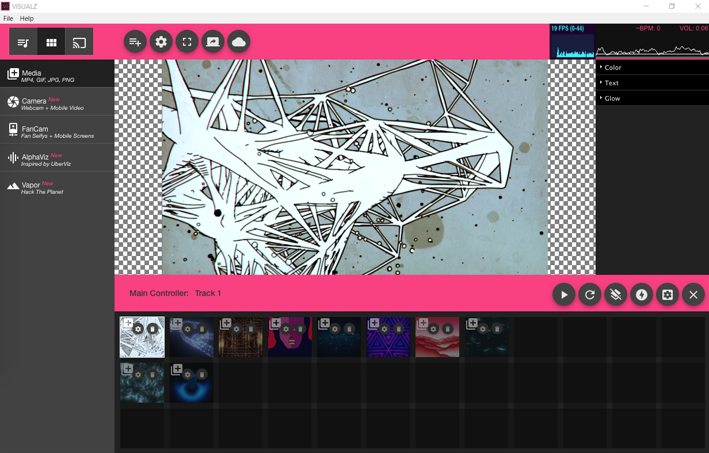

<div class="how-to-app">
  
  <button mat-mini-fab color="primary" class="one"
    matTooltip="Toggle between your set's tracks &amp; Content options here. Your set can have multiple tracks. Add content to your set by clicking on the content options in the sidebar.">
    1
  </button>
  <button mat-mini-fab color="primary" class="two"
    matTooltip="Add content like Gifs, Videos, and Images to your track. It's easy! Just start clicking and the content will appear as a content block in the Track Content bottom panel.">
    2
  </button>
  <button mat-mini-fab color="primary" class="three"
    matTooltip="Your track's content will appear here in this lower panel which is usually only for your main screen or your CrowdScreen. But in most cases its just your main screen. Drag and drop content blocks to change the playback order. Click the trash can to delete the content block.">
    3
  </button>
  <button mat-mini-fab color="primary" class="four"
    matTooltip="Content settings will appear here when you click on a content block. Different types of content have different settings.">
    4
  </button>
  <button mat-mini-fab color="primary" class="five"
    matTooltip="The beat analyzer will change color every time a amplitude spike greater than the threshold occurs. This is the flux-capacitor of the VISUALZ software and controls the content playback timing. Basically it looks pretty but you can adjust the threshold in the Track Settings if necessary.">
    5
  </button>
  <button mat-mini-fab color="primary" class="six"
    matTooltip="Click play to start previewing content playing back with the audio. By default VISUALZ will use the computer's mic for audio input.">
    6
  </button>
  <button mat-mini-fab color="primary" class="seven"
    matTooltip="Click fullscreen to view over HDMI or VGA to a projector or screen.">
    7
  </button>
  <button mat-mini-fab color="primary" class="eight"
    matTooltip="The preview window will display the content block you are focused on or the current playing content block if playing.">
    8
  </button>
</div>